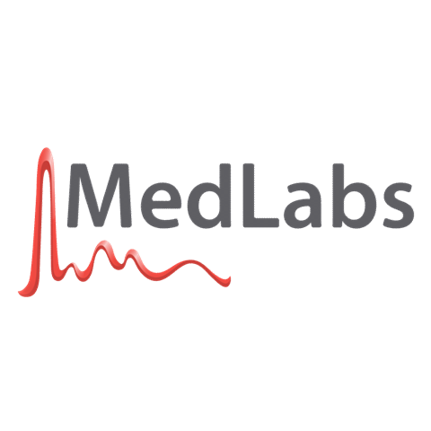

MedLabs Data Analysis
Turning shipment and reagent data into an executive dashboard.
Overview
MedLabs Data Analysis is a data analysis project focused on identifying waste and improving supply management within MedLabs. By analyzing shipment and reagent data, I discovered that a portion of the laboratory’s supplies were expiring before being used, resulting in significant financial losses.
The analysis brought together information about shipments, suppliers, reagent types, expiration, and storage conditions to uncover patterns behind the waste. I then turned these findings into an executive dashboard that presents the most important insights in a clear and accessible way.
Interactive preview
Showcase
Click any screenshot to enlarge it.
Project Focus
- Analyzed MedLabs shipment and reagent data to identify sources of waste.
- Identified the financial impact of expired supplies.
- Measured the percentage of reagents being wasted.
- Compared waste levels across different vendors and suppliers.
- Analyzed reagent types and their associated waste.
- Examined temperature information to identify potential storage-related factors.
- Created an executive dashboard highlighting key findings and business insights.
The project strengthened my understanding of data analysis, business intelligence, and turning large datasets into meaningful insights that can support real-world business decisions.